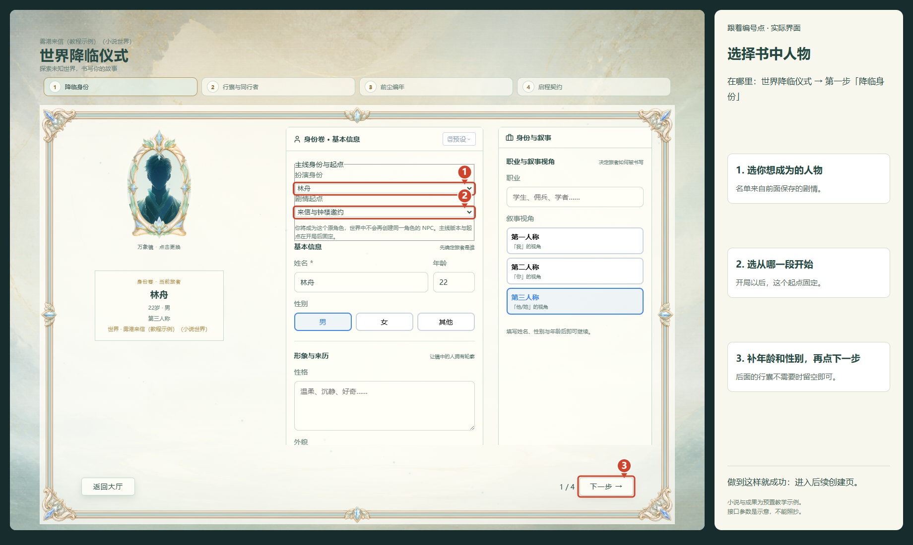
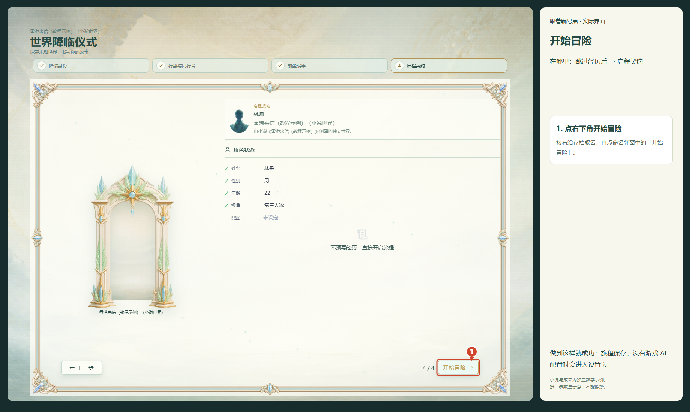

小说拆解台：四步开始玩
回到游戏，在世界大厅打开「小说拆解台」。所有步骤一直可见，底部主按钮会根据实际资料进度更新。漏掉一步时，直接查看当前提示即可继续。
在拆解台完成四步
- 上传小说：选择或拖入 TXT、EPUB。检查正文，点击「下一步：选择要拆的章节」。JSON 资料或备份也能直接导入。
- 选章拆解：新小说默认先试拆前 10 章，也可以自己填写起止章，或者明确选择整本。再选择只拆人物设定，或连这几章的原作故事一起拆。保存 AI 配置后，点底部「开始拆解第…章」，章节选择一起生效，其余章节不会调用 AI。
- 人物与设定：先看效果。当前范围一直显示，内容不够可「再多拆 10 章」或重新选择章节。已有资料即可点「用当前资料创建世界」，不必等全书拆完。
- 创建世界：填写名称，根据下方对应玩法完成准备，再点底部「创建世界，回大厅游玩」。
在小说世界里自由玩
第 2 步选择「只要人物和世界设定」。先拆 10 章也能看效果；已有资料就能创建世界，使用书中的人物、地点和规则开始自己的故事。
从原作故事开局
第 2 步选择「人物设定 + 原作故事」，AI 会连所选章节的原作剧情一起拆，不必一次读完整本。
第 4 步选择一个已完成的故事段。使用同一个底部主按钮，依次完成「整理开局剧情」→「保存剧情版本并选用」→「创建世界，回大厅游玩」。
默认起始阶段可以直接使用；查看或修改剧情细节是可选操作。所选开场尚未读完时，换一个已完成的段，或者继续读取。
创建之后，进入游戏
- 在大厅打开刚才创建的世界，点击「选择并继续」。没看到世界时可以翻页。
- 在「降临身份」填写姓名、年龄、性别。原作世界还可以选择书中人物和剧情起点。
- 点击「下一步」，行囊可以留空。不想写以前的经历时，点「跳过经历」。
- 在「启程契约」点「开始冒险」，填写存档名称，确认开始。
如果进入设置页，旅程已经保存。到「API 设置」配置游戏聊天 AI，测试并保存后回到游戏发送行动。拆小说与游戏聊天使用各自的 AI 配置。
查看游戏内的角色与开局示例
以下是角色创建示例，小说内容和接口参数仅用于教学。


中断、失败或换设备怎么办？
点击「暂停并保存」或「保存并关闭」。回来在「继续已有小说」中打开对应小说，界面根据实际成果回到可继续的步骤。无需重新上传，失败段可以单独重试，也可以先查看已有资料。
剧情整理失败时，可以恢复上次整理。顶部「备份」下载原文与付费成果；换设备时导入该 JSON 即可恢复。
AI 读取与剧情整理会产生接口费用。普通续读使用底部主按钮；「重新归并资料」「重新提取全部原文证据」会再次调用 AI，属于可选操作。